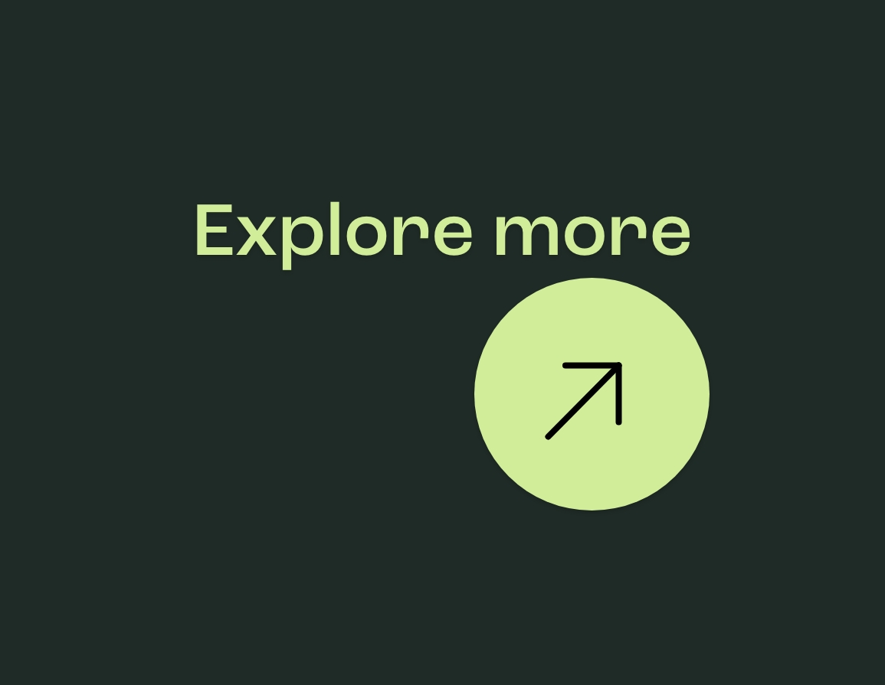
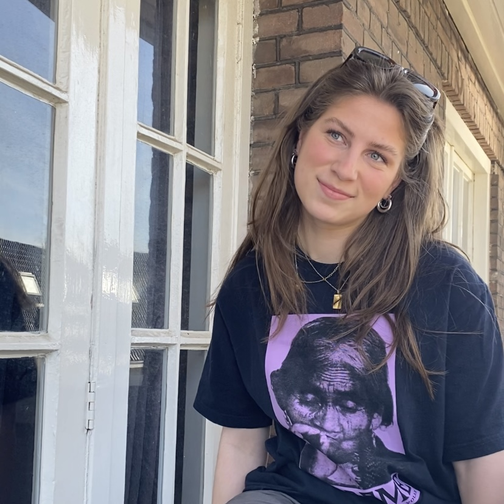
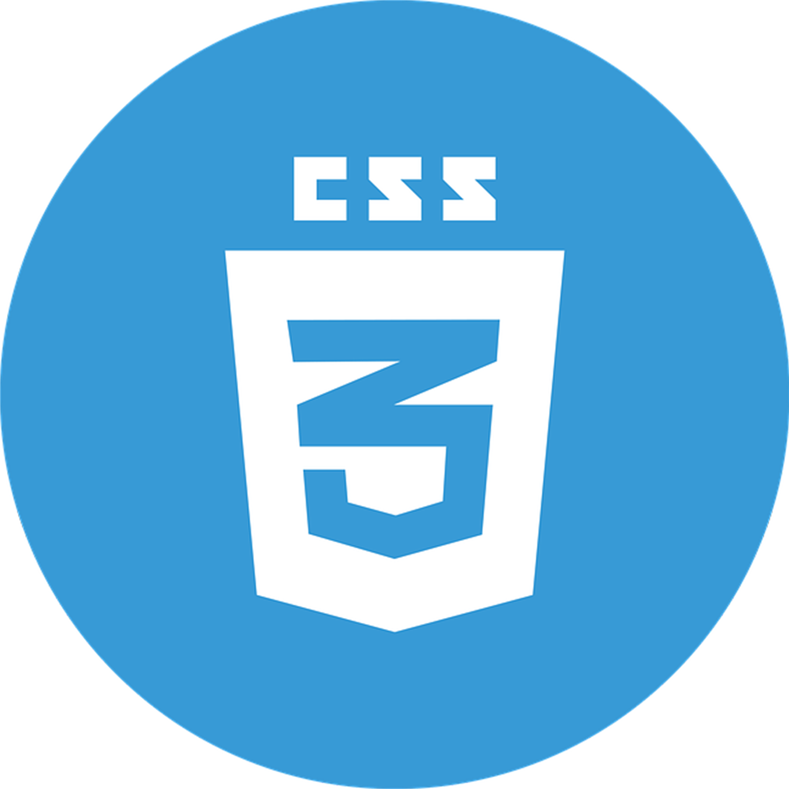
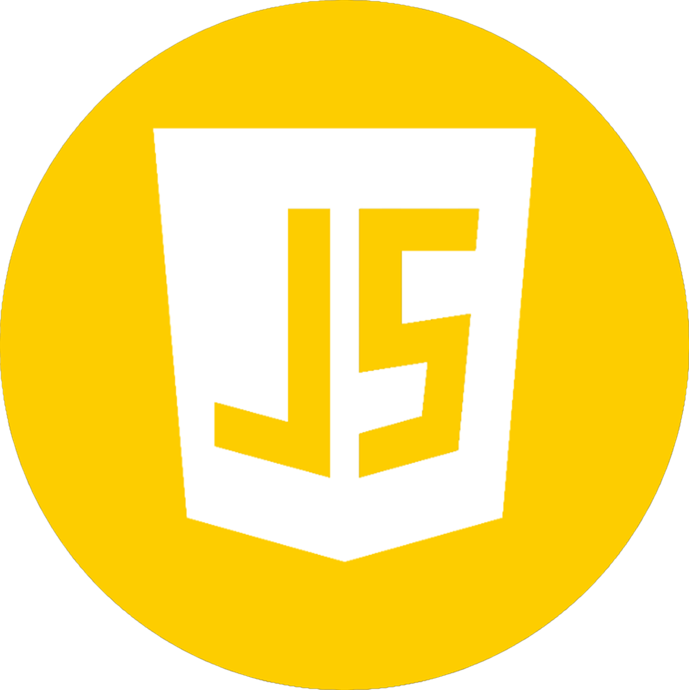
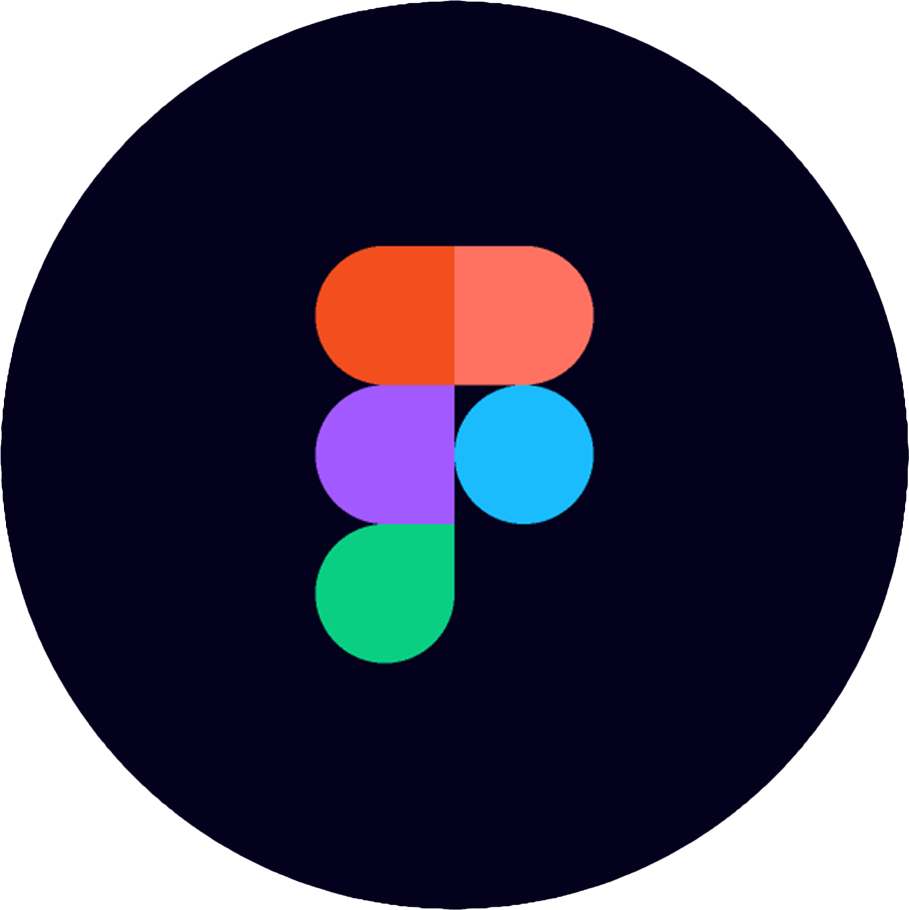
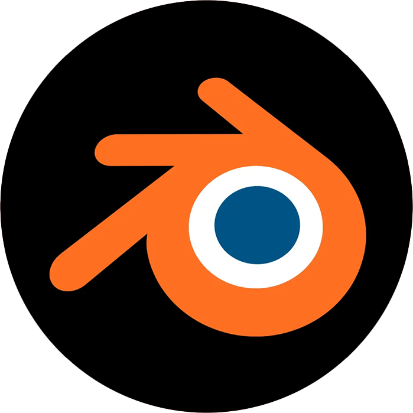

Projecten
-
Paradiso • Front–end Development
In dit project heb ik de paradiso site from scratch nagemaakt. Ik neem je mee door het design proces.
Bekijk project

-
Travel Journey • UX / UI Design
In dit project heb ik een concept uitgewerkt tot hi–fi schermen van een gebruiksvriendelijke app. Ik neem je mee door het design proces.
Bekijk project

-
3D Design • Blender
In dit project heb ik meerdere 3D designs gemaakt. Ik neem je mee door het design proces.
Bekijk project

- 
Over mij
Hi, ik ben Lynn. Een 20–jarige UX/UI designer uit Amsterdam. Ik combineer graag user experience en design om een complete digitale ervaring te creëren. Momenteel zit ik in mijn derde jaar van mijn studie Communicatie en Multimedia Design aan de Hogeschool van Amsterdam.
Skill • List
-
HTML
- 
CSS
- 
Javascript
- 
Figma

Adobe Illustrator

Adobe Photoshop

Adobe XD
- 
Blender
Contact
-
Bericht
+31 6 39186974
-
E–mail
lynnvanderhoorn@gmail.com